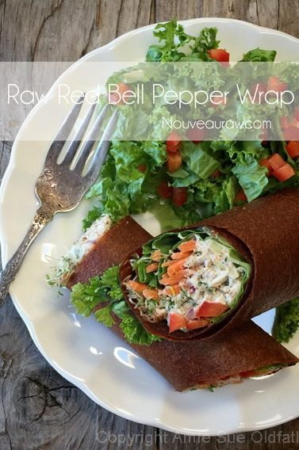

<!doctype html><html lang="en"><meta charset="utf-8"><meta name="viewport" content="width=device-width,initial-scale=1"><title>Artisan Breads and Wraps</title><link rel="stylesheet" href="../reader.css"><header><a href="../START_HERE.html">← Каталог и поиск</a> · <a href="https://nouveauraw.com/free-recipes/artisan-breads-free/">Оригинал</a> · Личная копия, 10.09.2026 · © Amie Sue</header><main><div id="post-40956" class="post-40956 post type-post status-publish format-standard has-post-thumbnail hentry category-artisan-breads-free category-wraps tag-dairy-free tag-dehydrated tag-gluten-free tag-nut-free tag-refined-sugar-free tag-soy-free tag-sugar-free tag-vegan" data-source-url="https://nouveauraw.com/free-recipes/artisan-breads-free/">

  

<div class="grid_1">

	<div class="image-wrap fader">
    <span class="category"><a href="artisan-breads-apricot-sweetened-bread-with-apricot-jam-spread-4e62195550.html"> </a> </span> 
        <!-- removed title overlay -->
	<a href="artisan-breads-apricot-sweetened-bread-with-apricot-jam-spread-4e62195550.html" title="go to Apricot Sweetened Bread with Apricot Jam Spread"><span></span></a>
	</div>
         <!-- title below thumbnail -->
<div class="nr_title"><a href="artisan-breads-apricot-sweetened-bread-with-apricot-jam-spread-4e62195550.html" title="go to Apricot Sweetened Bread with Apricot Jam Spread">Apricot Sweetened Bread with Apricot Jam Spread</a></div>

		
	
</div><!-- .grid -->


  

<div class="grid_1">

	<div class="image-wrap fader">
    <span class="category"><a href="wraps-banana-wraps-2bc049ca7c.html"> </a> </span> 
        <!-- removed title overlay -->
	<a href="wraps-banana-wraps-2bc049ca7c.html" title="go to Banana Wraps"><span></span></a>
	</div>
         <!-- title below thumbnail -->
<div class="nr_title"><a href="wraps-banana-wraps-2bc049ca7c.html" title="go to Banana Wraps">Banana Wraps</a></div>

		
	
</div><!-- .grid -->


  

<div class="grid_1">

	<div class="image-wrap fader last">
    <span class="category"><a href="artisan-breads-raw-country-living-banana-bread-f0eea05fd4.html"> </a> </span> 
        <!-- removed title overlay -->
	<a href="artisan-breads-raw-country-living-banana-bread-f0eea05fd4.html" title="go to Country Living Banana Bread"><span></span></a>
	</div>
         <!-- title below thumbnail -->
<div class="nr_title"><a href="artisan-breads-raw-country-living-banana-bread-f0eea05fd4.html" title="go to Country Living Banana Bread">Country Living Banana Bread</a></div>

		
	
</div><!-- .grid -->


  

<div class="grid_1">

	<div class="image-wrap fader">
    <span class="category"><a href="wraps-red-bell-pepper-wrap-33378a217e.html"> </a> </span> 
        <!-- removed title overlay -->
	<a href="wraps-red-bell-pepper-wrap-33378a217e.html" title="go to Red Bell Pepper Wrap"><span></span></a>
	</div>
         <!-- title below thumbnail -->
<div class="nr_title"><a href="wraps-red-bell-pepper-wrap-33378a217e.html" title="go to Red Bell Pepper Wrap">Red Bell Pepper Wrap</a></div>

		
	
</div><!-- .grid -->


	<div class="nav-interior clearfix">
			<div class="prev"></div>
			<div class="next"></div>
	</div>

	
</div></main></html>